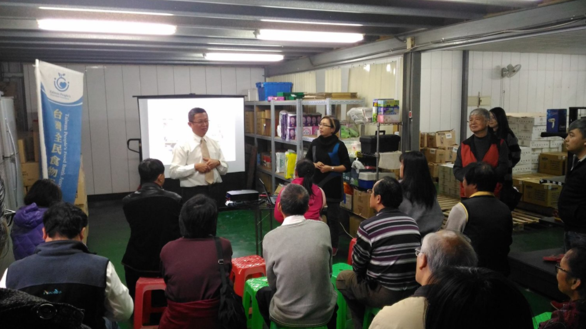
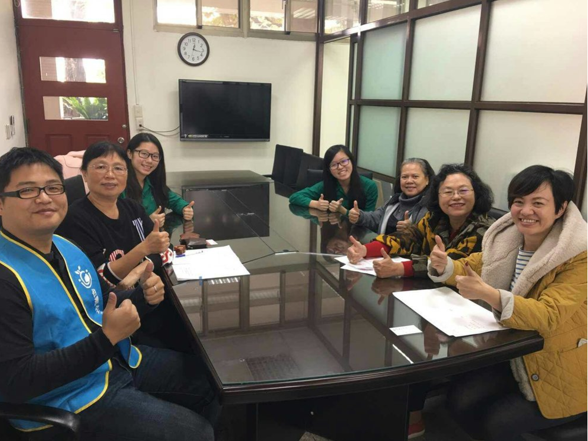

【福音社福 永續服務】
由基督教芥菜種會、台中大慶聖教會食物銀行、好牧人全人關顧協會所發起的全台
「教會社區食物銀行說明會」，全民食物銀行榮幸地參與台東和台中兩場次；了解許
多教會不僅傳福音，也希望透過此食物銀行方案的結合，減少物資與剩食的流失，更
努力地關懷在地弱勢！社區能更溫馨和樂，逐漸邁向「老有所養、幼有所教、貧有所
依、難有所助」的美好境界！
我們一本初衷地持續推動【資源不浪費 台灣無飢
餓; No Waste, No Hunger】宗旨，竭盡所能籌募物資，也期望社會大眾能予以更
多的支持與鼓勵。

【雪中送炭，溫馨膳循環】
全民食物銀行於去年11月接獲台中女中委託，希望能協助媒合領取未碰口午膳的單
位；在了解女中楊同學、柳同學與林同學已於校內推廣凝聚共識，並已籌組「聖食志
工隊」，全民食銀立即邀請社會局社會救助科陳股長與有供餐的合作夥伴，共同前往
女中商議執行細節。
感謝學務處王主任的鼎力相助，以及聖食志工隊積極提供相
關資料，我們順利洽詢到南區的大慶關懷協會，以及梧棲的台中更生團契，將於農曆
年後新學期開始，派員領回未碰口午膳；不僅幫助更多弱勢家庭受惠，同時更具正向
教育意義！目前知悉台中已有其他學校和廠商有相關捐贈意願，歡迎更多的供餐社福
機構與我們合作，一起努力讓台中更溫馨美好～
(感謝平傳媒-盧專員採訪!)


【1111單身節 環保公益不孤單】
非常感謝廠商與民眾們多年來的支持！
歐洲經貿辦事處邀請我們全民食銀
偕同主婦聯盟環保基金會
前往參加 #2016台歐綠色嘉年華
現場不僅倡導珍惜食物
更準備了體驗遊戲與民眾同樂～
在未來的日子裡我們會繼續打拼
與全台協力夥伴共同守護每份愛心
達成「資源不浪費 台灣無飢餓」的理想目標！
#歐洲經貿辦事處
#全民食物銀行
#DHL
#主婦聯盟環境保護基金會
歐洲經貿辦事處邀請我們全民食銀
偕同主婦聯盟環保基金會
前往參加 #2016台歐綠色嘉年華
現場不僅倡導珍惜食物
更準備了體驗遊戲與民眾同樂～
在未來的日子裡我們會繼續打拼
與全台協力夥伴共同守護每份愛心
達成「資源不浪費 台灣無飢餓」的理想目標！
#歐洲經貿辦事處
#全民食物銀行
#DHL
#主婦聯盟環境保護基金會